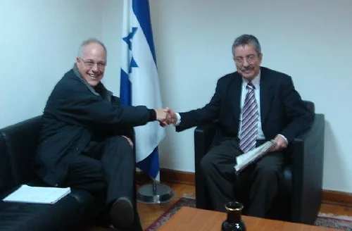
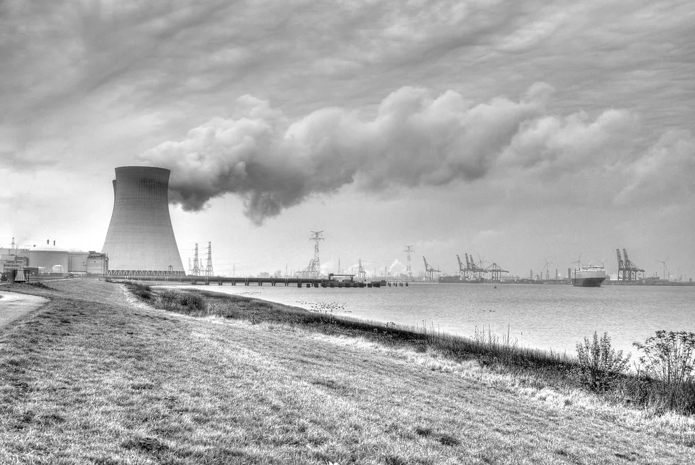

레제프 타이이프 에르도안 튀르키예 대통령이 2일부터 4일까지 사흘간 한국을 국빈 방문한 가운데, 이재명 대통령과의 정상회담이 3일 열렸다. 양 정상은 이날 오후 공식 환영식을 시작으로 정상회담, 양해각서 서명식, 국빈 만찬까지 숨가쁜 일정을 이어갔다. 에르도안 대통령의 방한은 2018년 이후 8년 만으로, 그만큼 이번 방문은 양국 관계의 새로운 전환점으로 주목받고 있다.
이번 정상회담의 핵심 의제는 원전과 방위산업 분야 협력이다. 튀르키예는 북부 흑해 연안 시노프 지역에 추진 중인 '시노프 제2원전' 건설 사업의 협력 파트너로 한국을 유력하게 검토하고 있는 것으로 알려졌다. 한국은 아랍에미리트 바라카 원전 수출 이후 추가 해외 원전 수주를 모색해온 만큼, 이번 협력 논의가 구체적인 성과로 이어질지에 관심이 모인다. 방산 분야에서는 튀르키예가 보유한 무인기 등 무인체계 운용 경험과 한국의 방산 기술·생산 역량을 결합하는 협력 방안이 테이블에 올랐다.

원전과 방산 외에도 양국은 교역·투자 확대 방안을 함께 논의했다. 바이오, 에너지, 과학기술 등 미래산업 분야로 협력의 폭을 넓히는 방안도 의제에 포함됐다. 정상회담 뒤에는 양국 정부 및 기업 간 다수의 양해각서 서명식이 예정돼 있어, 이번 국빈방문을 계기로 경제협력의 제도적 틀이 한층 두꺼워질 것으로 전망된다. 양국은 2012년 자유무역협정(FTA) 체결 이후 교역을 꾸준히 늘려왔지만, 최근 몇 년간 원전·방산처럼 고부가가치 산업 협력으로 관계를 끌어올리려는 시도가 본격화하는 흐름이다.
튀르키예는 북대서양조약기구(NATO) 회원국이자 중동과 유럽을 잇는 지리적 요충지에 자리해 있어, 이번 회담은 양자 경제협력을 넘어 외교·안보 차원의 의미도 함께 지닌다. 양 정상은 우크라이나 전쟁과 중동 정세 등 국제 현안에 대해서도 의견을 나눌 것으로 예상된다. 에르도안 대통령이 중동 지역에서 쌓아온 중재자 역할과 한국 정부가 추진하는 다자외교 기조가 맞물리면서, 이번 회담이 양국 간 전략적 협력관계를 한 단계 끌어올리는 계기가 될지 주목된다.

국내 산업계도 이번 정상회담의 후속 성과에 주목하고 있다. 원전 업계에서는 튀르키예 원전 사업 참여가 성사될 경우 아랍에미리트 바라카 원전에 이어 한국형 원전 기술의 두 번째 해외 수출 사례가 될 수 있다는 기대가 나온다. 방산 업계 역시 무인체계를 비롯한 첨단 분야 협력이 구체화하면 중동·유럽 시장 진출의 교두보가 될 수 있다는 전망을 내놓고 있다. 다만 양해각서 서명이 곧바로 사업 수주로 이어지는 것은 아니어서, 실제 계약 체결까지는 추가 협상과 기술 검증 절차가 필요할 것으로 보인다.
정부는 이번 국빈방문을 계기로 체결되는 양해각서들의 세부 내용을 순차적으로 공개할 예정이다. 에르도안 대통령은 4일 방한 일정을 마무리하는 것으로 알려졌으며, 이후 양국 실무진 간 후속 협의가 이어질 전망이다. 8년 만에 재개된 양국 정상 간 교류가 원전과 방산을 비롯한 실질적 경제협력 성과로 이어질지, 향후 세부 협상 과정이 관심을 모은다.
외교가에서는 이번 방한이 양국 관계의 상징적 복원이라는 의미도 함께 지닌다고 평가한다. 2018년 이후 끊겼던 정상 간 직접 교류가 재개된 만큼, 앞으로 각 분야 실무 채널에서 후속 협의가 얼마나 속도감 있게 진행되느냐가 이번 회담의 실질적 성과를 가늠하는 잣대가 될 것으로 보인다. 정부 관계자는 원전과 방산 분야의 협력이 구체적인 계약으로 이어지기까지는 상당한 시일이 걸릴 수 있다며 신중한 태도를 보이고 있다.